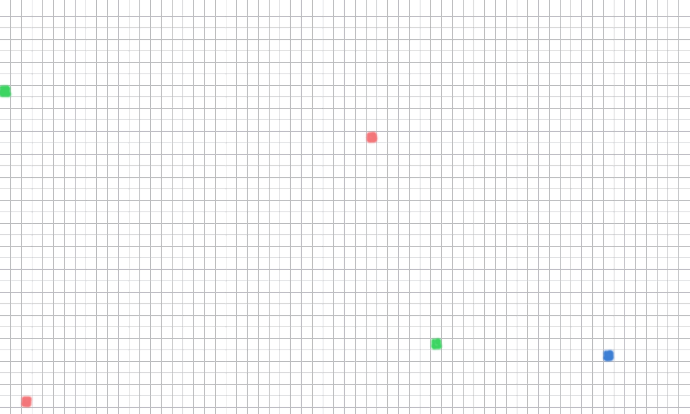

A Different Kind of Constraint
In the last module, we focused on a problem shaped by time complexity. This week, we turn to a different challenge: space complexity.
Some data sets are expensive not because the calculations are especially difficult, but because the straightforward representation wastes a large amount of memory. A matrix is a good example. If most entries are the same default value, storing every single position explicitly can be unnecessarily costly.
Why Representation Matters
For at least one important use case, we can reduce memory usage by changing the internal data structure we use to store the matrix. Instead of treating every entry as equally important, we can focus on the entries that actually carry information.
Dense Representation
Store every entry directly. This keeps access simple, but it can waste space when most values are just the default.
Sparse Representation
Store only the meaningful entries. This can save a great deal of memory, but it usually makes the implementation and some operations more expensive.
Seeing a Sparse Matrix
The image below shows the basic idea: only a few positions contain non-default values. When most of the matrix is empty, it makes sense to ask whether we should really spend memory storing all of those repeated defaults.
